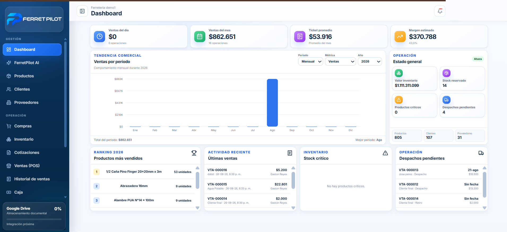
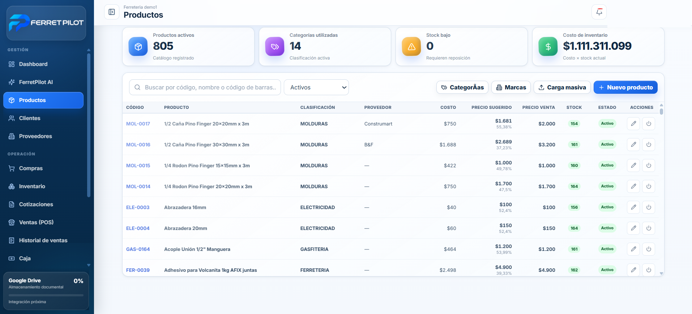
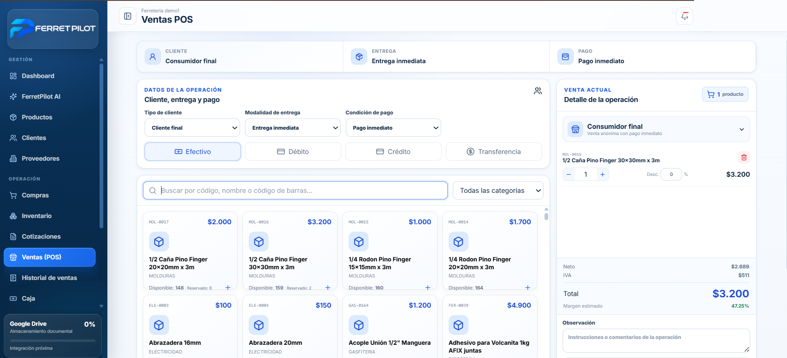
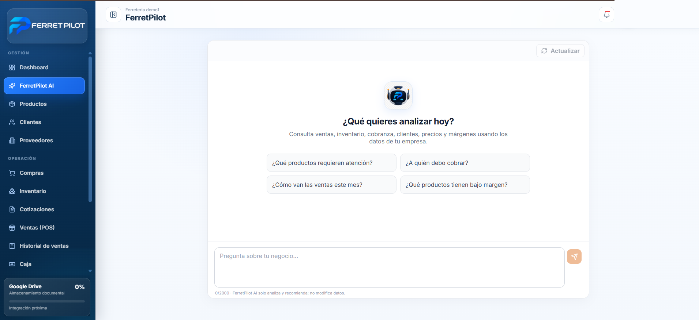

Ventas y POS
Venta rápida, medios de pago, cotizaciones, historial y gestión de despachos.
ERP + inteligencia para ferreterías
Ventas, inventario, compras, clientes, proveedores y operación diaria integrados en una plataforma creada específicamente para el negocio ferretero.

Una plataforma, toda la operación
FerretPilot centraliza los procesos que normalmente viven en planillas, sistemas separados y controles manuales.
Venta rápida, medios de pago, cotizaciones, historial y gestión de despachos.
Stock, categorías, costos, precios, márgenes, reservas y productos críticos.
Proveedores, abastecimiento, recepción y trazabilidad de las compras.
Cartera, cuentas por cobrar, comportamiento comercial y seguimiento.
Control de caja, pagos, cuentas por pagar y visibilidad financiera.
Consultas sobre ventas, stock, cobranza, clientes, precios y márgenes.
Producto real
Interfaces reales de la plataforma, diseñadas para entregar claridad incluso en las jornadas de mayor movimiento.

Busca productos, revisa costos, precios, márgenes y stock, y administra el catálogo sin perder contexto.

Gestiona cliente, entrega, pago, productos y totales en un flujo comercial rápido y consistente.
FerretPilot AI
Un agente especializado consulta los datos reales de la ferretería para identificar productos que requieren atención, revisar ventas, analizar márgenes y apoyar la cobranza. Analiza y recomienda; el usuario mantiene el control.

Implementación real
Primer caso implementado en una ferretería chilena. La identidad comercial se mantiene confidencial hasta contar con autorización de publicación.
El proyecto abordó la necesidad de integrar información comercial, inventario y operación diaria en una plataforma única.
No se publican porcentajes ni resultados económicos sin validación y autorización del cliente.
Conversemos sobre los procesos y necesidades de tu ferretería.